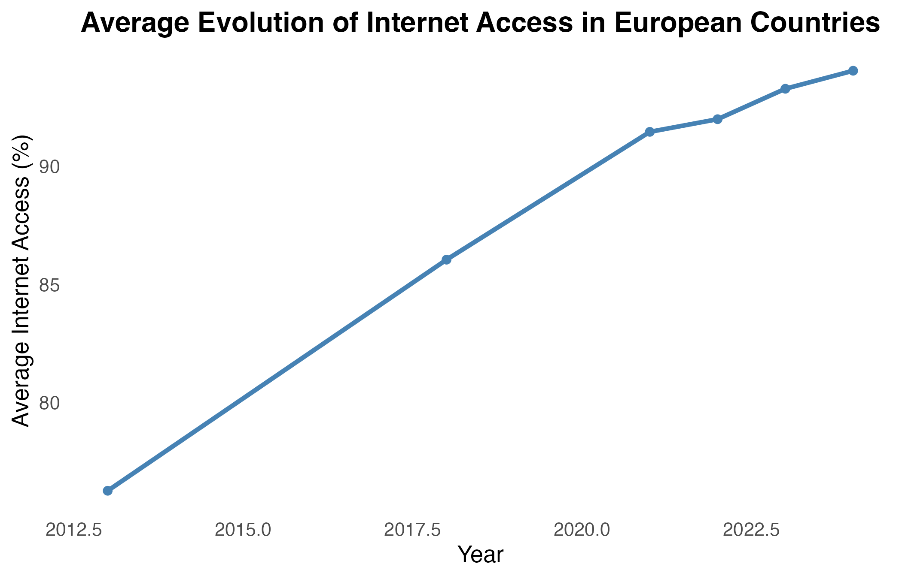
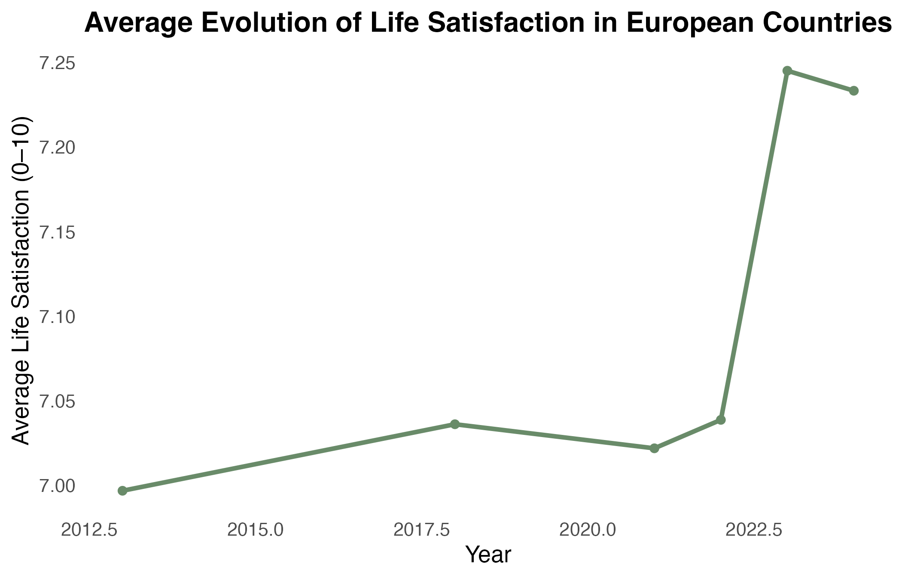
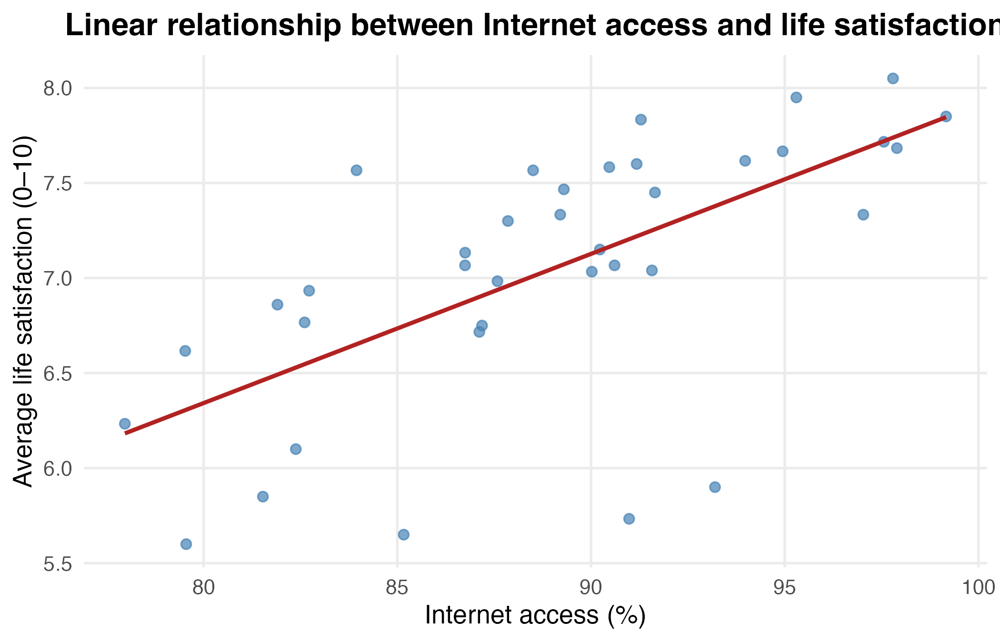

ÉCONOMÉTRIE · DONNÉES DE PANEL · R
Internet Access
& Life Satisfaction
Un meilleur accès à Internet est-il associé à une satisfaction de vie plus élevée dans les pays européens ?
LA QUESTION
La connectivité numérique va-t-elle de pair avec le bien-être ?
Internet facilite l’accès à l’information, à l’éducation, au travail et aux interactions sociales. Il peut donc contribuer au bien-être, mais cet effet n’est pas évident à mesurer.
Dans les pays européens, l’accès à Internet est déjà très répandu. L’objectif est donc de voir si les différences de connectivité qui subsistent sont encore associées à des différences de satisfaction de vie.
L’analyse porte sur deux indicateurs Eurostat : la part des ménages disposant d’un accès à Internet et la satisfaction de vie moyenne, mesurée sur une échelle de 0 à 10.
PRÉPARATION DES DONNÉES
Deux bases réunies au niveau pays-année
J’ai d’abord nettoyé séparément les données d’accès à Internet et de satisfaction de vie : sélection des variables utiles, suppression des agrégats et traitement des valeurs manquantes.
Les deux bases ont ensuite été fusionnées à partir du pays et de l’année.
Le jeu de données final contient 191 observations pays-année. Sur l’ensemble de l’échantillon, l’accès moyen à Internet est d’environ 88,7 % et la satisfaction de vie moyenne de 7,1 sur 10.
ÉVOLUTION
Une Europe de plus en plus connectée
L’accès moyen à Internet augmente nettement au cours de la période et atteint des niveaux très élevés dans la plupart des pays européens.
La satisfaction de vie évolue beaucoup moins fortement. Les deux variables ne suivent donc pas mécaniquement la même trajectoire.


RELATION
Une association positive apparaît entre les pays
Lorsque les valeurs sont moyennées par pays, les pays où l’accès à Internet est plus élevé tendent aussi à présenter une satisfaction de vie plus élevée.
La tendance est positive, mais les observations restent dispersées : la connectivité ne suffit donc pas à expliquer à elle seule les différences de bien-être entre pays.
Lorsque l’analyse porte uniquement sur les variations au sein d’un même pays dans le temps, la relation devient beaucoup plus faible.

MODÈLES
La relation reste-t-elle après contrôle ?
J’ai comparé trois spécifications : une régression OLS simple, puis un modèle avec effets fixes pays, et enfin un modèle avec effets fixes pays et année.
L’objectif est de vérifier si la relation positive observée reste présente lorsqu’on tient compte des caractéristiques propres à chaque pays et des événements communs à certaines années.
Lecture : dans le modèle avec effets fixes pays et année, +1 point de pourcentage d’accès à Internet est associé à environ +0,027 point de satisfaction de vie. La relation reste positive, mais elle ne constitue pas une preuve de causalité.
INTERPRÉTATION
Une relation positive, mais à interpréter avec prudence
Les trois modèles montrent une association positive entre accès à Internet et satisfaction de vie.
Cependant, une partie de la relation initiale s’explique par les différences structurelles entre les pays et par des facteurs communs dans le temps.
Le R² très élevé des modèles à effets fixes ne signifie pas qu’Internet explique à lui seul plus de 90 % du bien-être : une grande partie de ce pouvoir explicatif vient précisément des effets fixes ajoutés au modèle.
CE QUE J’EN RETIENS
Plus connecté, pas forcément plus heureux
L’accès à Internet est positivement associé à la satisfaction de vie dans les pays européens, y compris lorsque les différences entre pays et les effets liés aux années sont pris en compte.
Mais dans une Europe déjà très connectée, le niveau d’accès ne suffit pas à expliquer les écarts de bien-être. D’autres dimensions économiques, sociales et institutionnelles jouent probablement un rôle important.
L’analyse met donc en évidence une association, et non un effet causal de l’accès à Internet sur la satisfaction de vie.